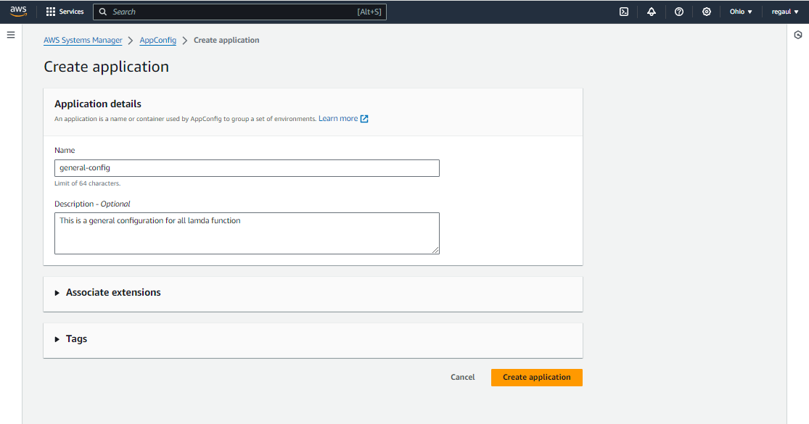
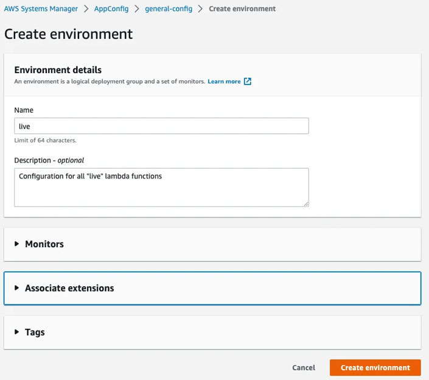
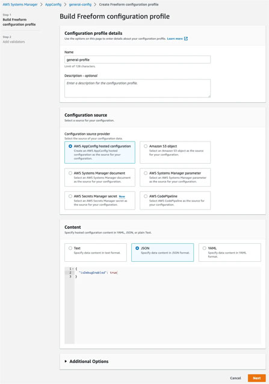
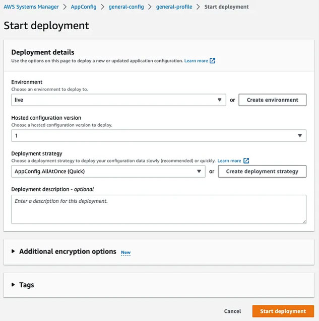
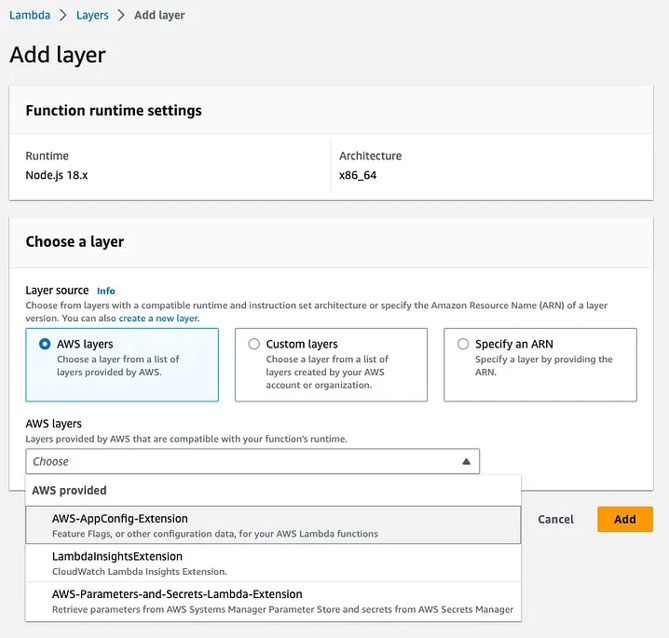
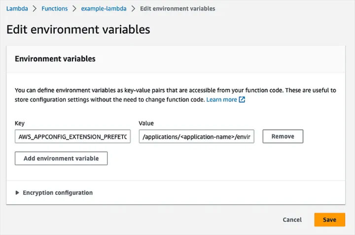

Employing AWS AppConfig in lieu of Lambda Environment Variables
AWS Lambda is a widely-used serverless computing platform that lets developers run code without dealing with the nitty-gritty of infrastructure management. We can write Lambda functions in different programming languages, including ESM with top-level await. These functions can smoothly work with various AWS services, and one such service is AWS AppConfig. AppConfig is a handy configuration management service that assists in handling application configurations across diverse environments.
Let's dive into how we can swap out environment variables in a Lambda function with AWS AppConfig, all with the help of a Lambda Extension. As an illustration, we'll set up a configuration profile to effortlessly turn on or off the debug library, all without the need to redeploy the Lambda function.
Replacing Environment Variables with AWS AppConfig
Using environment variables is a usual way to store setup details in Lambda functions. Yet, handling them can be tricky, especially with various environments in play. AWS AppConfig makes managing configuration data easier by offering a centralized spot to store setup info for different environments.
Opting for AWS AppConfig over Environment Variables allow us to configure one or more Lambda functions independently for any deployment, without the hassle of manually changing environment variables.

Start by making an AppConfig application to hold our setup details. Head to the AWS AppConfig console and hit the "Create application" button. Give your application a name and pick the right settings for your needs.
Establish an AppConfig Environment

After making the application, the next move is creating an AppConfig environment. An environment stands for a logical deployment target, like a development or production setting. To set up an AppConfig environment, visit the AWS AppConfig console, choose your application, head to the Environments tab, click on the “Create environment” button, name your environment, and pick the right settings for your situation.
Establish an AppConfig Configuration Profile.
Now, let's make an AppConfig configuration profile to store our setup details. A configuration profile is like a bunch of configuration info linked to an environment. To set up an AppConfig configuration profile, visit the AWS AppConfig console, pick your application, and on the “Configuration Profiles and Feature Flags” tab, click the “Create” button.
Choose "Freeform Configuration" and set up the profile:
1. Give your configuration profile a name.
2. Opt for "AWS AppConfig hosted configuration" to input
configuration details directly.
3. Pick "JSON" to define the configuration information:

Once this is done, click “Next” to create the configuration profile.
Establish an AppConfig Deployment.
An AppConfig deployment tweaks the configuration that any Lambda using the extension gets when they ask for the configuration. To set up an AppConfig deployment, head to the AWS AppConfig console, choose your application, pick the Configuration Profile you made earlier, and then hit “Start Deployment.”

When you're on the deployment screen, pick AppConfig.AllAtOnce (Quick) for the “Deployment Strategy” if you want the configuration change to happen right away. If not, go for another option to slowly introduce the configuration.
Once that's sorted, click “Start Deployment”.
Add the AWS AppConfig Lambda Extension.
The AWS AppConfig Lambda Extension is like a ready-to-use Lambda layer that lets your Lambda function connect with the AppConfig service. To install it, head to the Lambda console, select your function, go to the “Code” tab, and look for the “Layers” section near the bottom. Hit “Add a layer,” pick the AWS-AppConfig-Extension layer, and then click “Add”.

Revise the IAM Permissions for the Lambda Function.
To get configuration data from AWS AppConfig in a Lambda function, you have to adjust the function's IAM permissions to let it connect with the AppConfig service. Here's how you can do it:
Establish an IAM policy for the Lambda function.
Initially, make an IAM policy that gives the Lambda function the green light to reach the AppConfig service. You can craft your own policy or pick one from the selection of pre-made policies offered by AWS.
Link the IAM policy to the Lambda function.
Once you've got the IAM policy, the next step is to connect it to the Lambda function. To achieve this, navigate to the AWS Lambda console, pick your function, and hit the “Configuration” tab. In the “Permissions” section, click the “Role name” link to open the IAM console.
In the IAM console, press the “Attach policies” button, then find the policy you made earlier. Pick the policy and hit “Attach policy”.
Confirm the IAM permissions.
Once you link the IAM policy to the Lambda function, it's crucial to make sure the function has the required permissions to reach the AppConfig service. To do this, run a test on the Lambda function and review the CloudWatch logs for any errors linked to IAM permissions.
Integrate a Prefetch Environment Variable.
The AWS AppConfig Lambda Extension comes with a helpful environment variable called AWS_APPCONFIG_EXTENSION_PREFETCH_LIST. This variable can enhance your Lambda function's performance, offering the following advantages:
1. cold starts: By prefetching configuration data, the first time you run the Lambda function is faster. This is because the configuration data is already in the local cache, boosting the overall performance of your Lambda function. This is particularly beneficial for cases where low latency is crucial.
2. Less API calls: Prefetching configuration data cuts down on the number of API calls to the AppConfig service, leading to cost savings for your application.
To include this variable, visit the AWS Lambda console, choose your function, and click the “Configuration” tab. In the “Environment variables” section, tap the “Edit” button to add a new variable.

Replace--"application-name", "environment-name", and "configuration-profile-name" with the appropriate values for your use case.
Revise the Lambda Function Code.
After installing the extension, we can tweak our Lambda function code to integrate the AppConfig service. Here's a quick example, using the Node.js 18 Lambda runtime. Leveraging the built-in ESM and fetch support makes fetching the AppConfig configuration a breeze.
Conclusion
Utilizing the AWS AppConfig Lambda Extension is a simple and effective method to fetch configuration data in our AWS Lambda function. With the extension in action, we can skip the hassle of redeploying one or more Lambda functions every time a variable changes. Plus, it keeps our performance intact by prefetching and caching parameters.